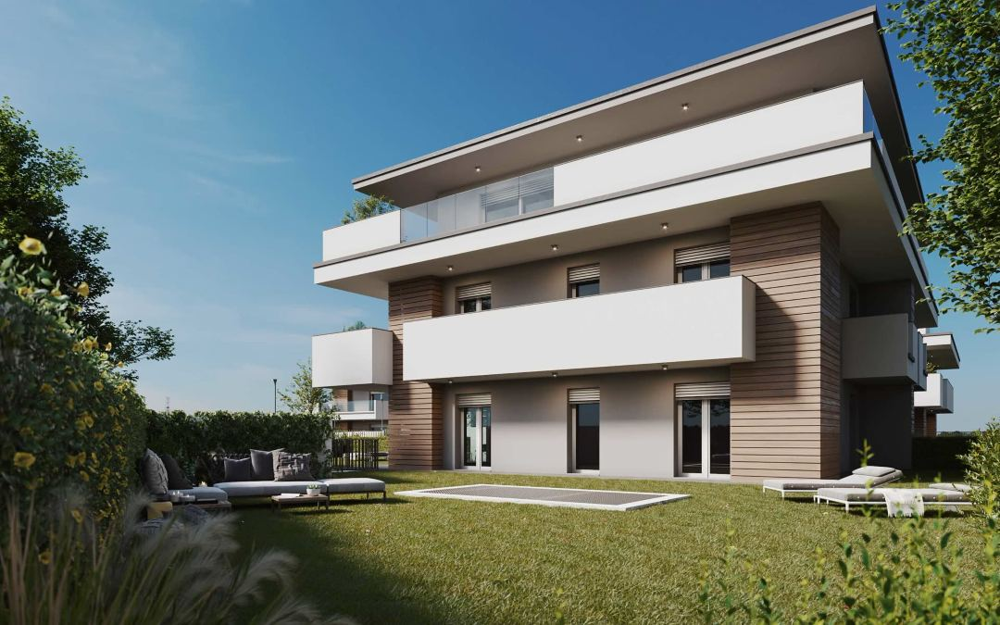
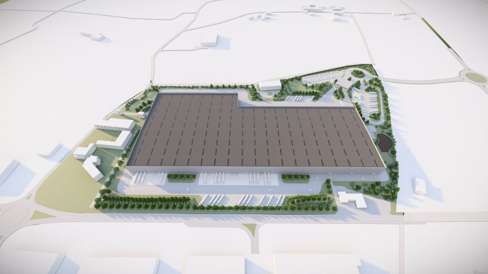
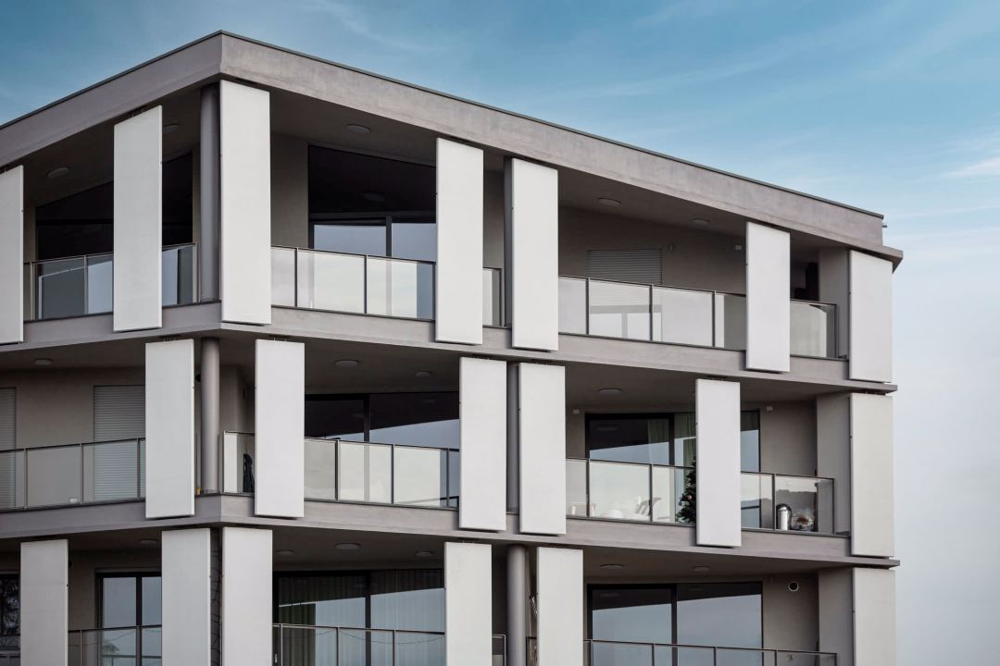
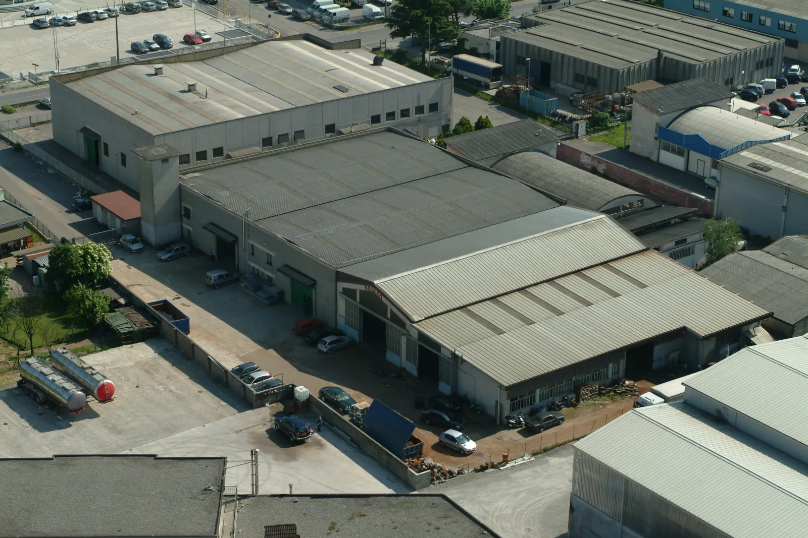
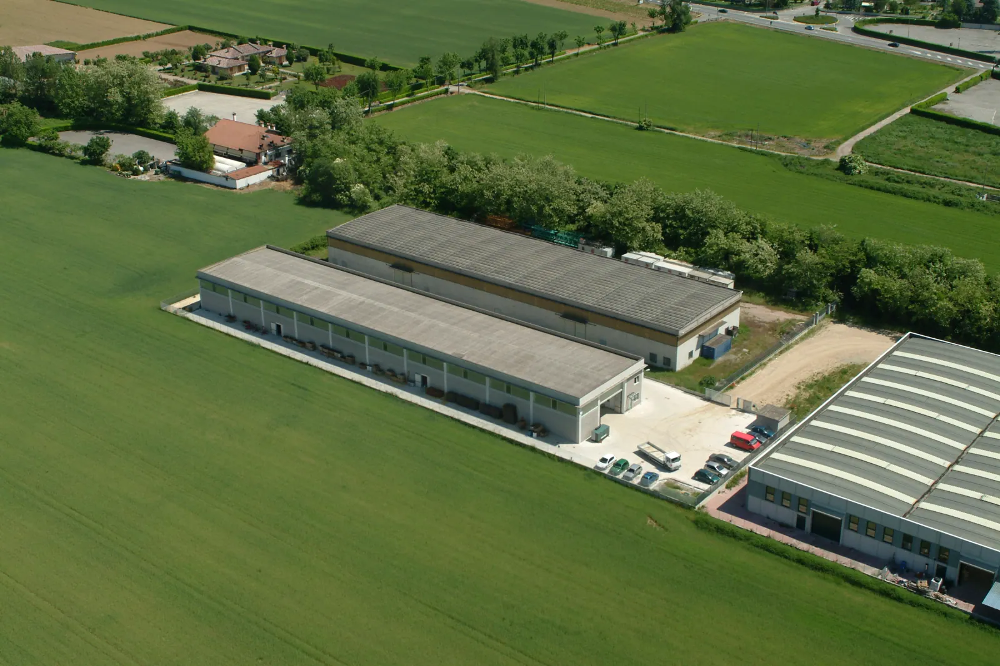
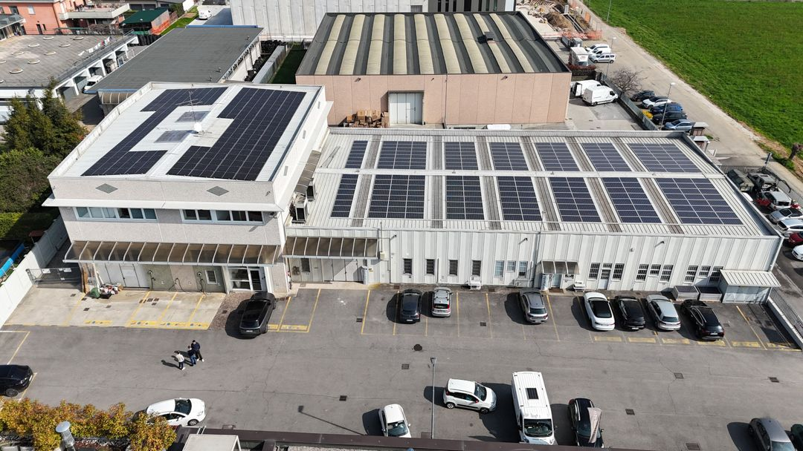
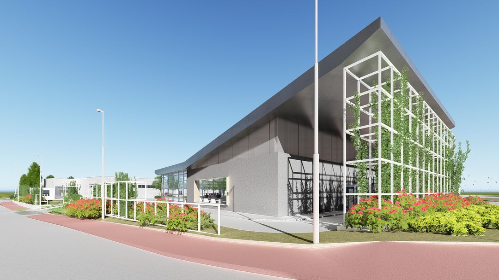
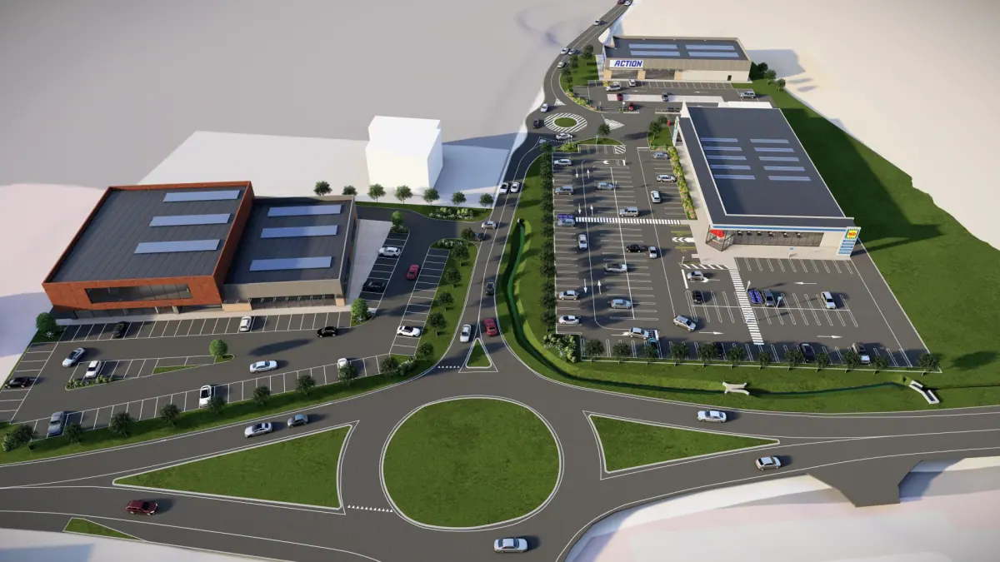

Residenze a Brembate di Sopra (BG). Render animato.
Trasformiamo aree in case, spazi commerciali, capannoni e campi fotovoltaici.
Render animato. Redona Centro, Bergamo.
Dal 1979 cerchiamo l'area, otteniamo i permessi e costruiamo. Dal 2010 realizziamo anche impianti fotovoltaici. Soprattutto a Bergamo e in Lombardia.
Di cosa hai bisogno?
Render. Redona Centro, Bergamo.
Cerchi uno spazio per la tua attività?
Uffici e box a Leffe Centro, aree commerciali e logistiche in sviluppo.
Vedi i progetti per aziendePolo logistico a Calcio (BG). Render animato.

Hai un'area da valorizzare?
Ci occupiamo noi di tutto il percorso, dal terreno all'edificio finito: cerchiamo e valutiamo l'area, otteniamo i permessi, costruiamo.
Proponici la tua areaL'area del polo logistico di Calcio (BG). Foto dal drone animata.
I nostri campi fotovoltaici
Li costruiamo dal 2010. Quello di Torre Boldone è alla base della comunità energetica Imotorre.
Scopri i nostri impiantiCampo fotovoltaico di Torre Boldone (BG). Foto dal drone animata.
Dal disegno all'edificio



I nostri progetti (42 progetti pubblicati, in 4 settori)
Case 14
- Residenza ViaduseGorle (BG) 2026
- Cortile BredaCologno al Serio (BG) 2024
- Redona Centro, lotti C1-C2Bergamo (BG) 2024
- Residenze a Brembate di SopraBrembate di Sopra (BG) 2023
- Residenza Antiche CiodereLeffe (BG) 2020
- Redona Centro, lotti B1-B2Bergamo (BG) 2020
- Redona Centro, lotti A1-A2-A3Bergamo (BG) 2019
- Residenza PascoliTorre Boldone (BG) 2010
- Residenze a BraccaBracca (BG) 2009
- Brignano 3Brignano Gera d'Adda (BG) 2007
- Palazzina in via CifrondiBergamo (BG) 2006
- Residenza Il ParcoNembro (BG) 2006
- Brignano 2Brignano Gera d'Adda (BG) 2004
- Brignano 1Brignano Gera d'Adda (BG) 2000
Commerciale 11
- Commerciale a Bonate SopraBonate Sopra (BG) 2026
- Commerciale a CalcioCalcio (BG) 2025
- Hotel da 254 camereOrio al Serio (BG) 2025
- Commerciale Comest e ComovestRivolta d'Adda (CR) 2025
- Commerciale a Porto TorresPorto Torres (SS) 2025
- Parco commerciale BiraldiCurno (BG) 2018
- Parco commerciale Trezzo 3Trezzo sull'Adda (MI) 2016
- Parco commerciale Trezzo 1-2Trezzo sull'Adda (MI) 2015
- Supermercato e unità terziariaBernareggio (MB) 2013
- Sede comunale con auditoriumBernareggio (MB) 2013
- Centro direzionale CaleidoBernareggio (MB) 2012
Industria e logistica 12
- Polo logistico a CalcioCalcio (BG) 2025
- Industriale a CurnoCurno (BG) 2025
- Polo logistico a Rivolta d'AddaRivolta d'Adda (CR) 2025
- Capannoni in viale delle IndustrieBernareggio (MB) 2014
- Capannone in via del CommercioBernareggio (MB) 2012
- Parco industriale Nembro 2Nembro (BG) 2008
- Capannoni e palazzina ufficiBernareggio (MB) 2006
- Capannone in via MarconiRanica (BG) 2003
- Capannone industriale a CiseranoCiserano (BG) 2002
- Parco industriale Nembro 1Nembro (BG) 2000
- Capannoni in via GaribaldiPedrengo (BG) 1995
- Zona industriale di PedrengoPedrengo (BG) 1980
Energia 5
Nessun progetto con questa ricerca. Prova con il nome del comune.
Chi siamo
Birolini nasce dall'iniziativa di Vittorio Birolini. Dal 1979 sviluppa aree e costruisce edifici residenziali, commerciali e industriali.
Dal 2010 realizza anche impianti fotovoltaici, a tetto e a terra, in Italia e all'estero.
Leggi la nostra storiaFoto. Zona industriale di Pedrengo (BG), progetto del 1980.
Dal 1979 a oggi
-
1979
Birolini nasce dall'iniziativa di Vittorio Birolini.
-
1995

Capannoni in via Garibaldi Pedrengo (BG), industria -
2000
 Parco industriale Nembro 1
Nembro (BG), industria
Parco industriale Nembro 1
Nembro (BG), industria
-
2002

Capannone industriale a Ciserano Ciserano (BG), industria -
2003

Capannone in via Marconi Ranica (BG), industria -
2006
 Residenza Il Parco
Nembro (BG), case
Residenza Il Parco
Nembro (BG), case
-
2009
 Residenze a Bracca
Bracca (BG), case
Residenze a Bracca
Bracca (BG), case
-
2010
 Campo fotovoltaico a Magliano Alpi
Magliano Alpi (CN), energia
Campo fotovoltaico a Magliano Alpi
Magliano Alpi (CN), energia
-
2012
 Centro direzionale Caleido
Bernareggio (MB), commercio
Centro direzionale Caleido
Bernareggio (MB), commercio
-
2015
 Parco commerciale Trezzo 1-2
Trezzo sull'Adda (MI), commercio
Parco commerciale Trezzo 1-2
Trezzo sull'Adda (MI), commercio
-
2018

Parco commerciale Biraldi Curno (BG), commercio -
2020
 Residenza Antiche Ciodere
Leffe (BG), case
Residenza Antiche Ciodere
Leffe (BG), case
-
2025

Commerciale Comest e Comovest Rivolta d'Adda (CR), commercio - Tutti i 42 progetti
Raccontaci di cosa hai bisogno: ti risponde la persona giusta.
Redona Centro, lotti B1-B2, Bergamo. Render animato.
Birolini S.p.A., Via G. Marconi 123/C, 24020 Ranica (BG)
Scrivici
Il modulo per scriverci da questa pagina è in arrivo. Per ora «Scrivici» apre la tua email.